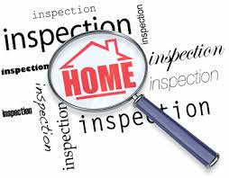
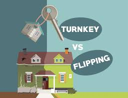

BLOGS
First-Time Home Buyer? Here’s What You Really Need to Know!
Posted on August 27th, 2025 1:30 PM
Buying your first home is exciting — and a little overwhelming. From financing to closing, this guide breaks down every step in plain English. Learn what to expect, how to avoid common pitfalls, and what you need to know to buy with confidence. Your path to homeownership starts here.
Ready to Sell Your Home? Here’s How to Get Top Dollar in Today’s Market
Posted on August 27th, 2025 1:30 PM
Thinking about selling your home? From pricing it right to making a great first impression, there’s more to it than just listing. This guide shares essential tips to help you attract buyers, avoid costly mistakes, and sell with confidence. Get the most out of your sale — start here
Home Inspection Do’s and Don’ts: What You Need to Know
Posted on August 27th, 2025 1:30 PM
A home inspection can make or break your deal. Whether you're buying or selling, knowing the key do’s and don’ts can save time, money, and stress. From prep tips to common mistakes to avoid, this guide covers what you need to know for a smoother...
Move-In Ready or Fixer-Upper? Here’s How to Decide What’s Right for You?
Posted on August 27th, 2025 1:30 PM
Torn between a move-in ready home and a fixer-upper? This quick guide breaks down the pros, cons, and key questions to help you decide. Whether you're after convenience or long-term value, knowing what fits your lifestyle and budget is the first step. Read on to make the right move.